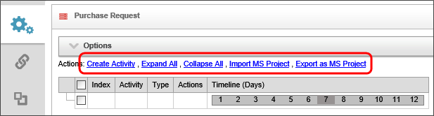
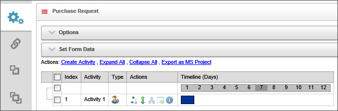
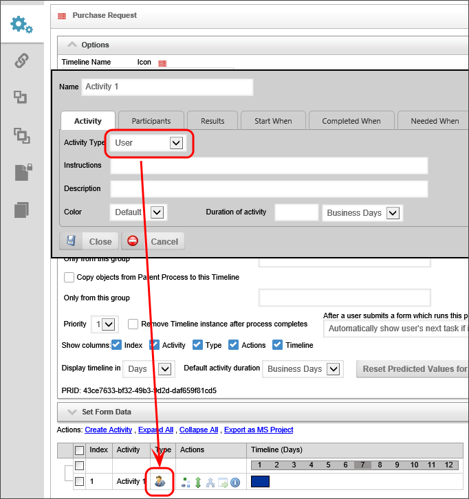
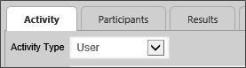
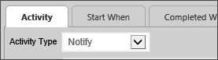

|
|
Lesson Contents | In this Lesson, you will learn how to configure the generic Timeline Activity settings that are common to all activity types. |
In any Timeline definition, a list of Actions links appears above the Gantt Chart for the Process Timeline definition.

Click on the Create Activity link to create a new Process Timeline Activity. As a default, the newly created activity will be named "Activity 1". You can change the activity name by double-clicking on the activity name to open the configuration screen, and changing the Name property.

Each activity is displayed as a separate row on the Gantt Chart interface.
A Process Timeline is made up of a series of activities. Each activity in a Process Timeline identifies the task to be performed and the users who should perform the task. Activities can be easily added, moved and deleted from a Process Timeline Definition.
Each Timeline Activity falls into one of a number of different types. Each activity type defines a set of functions or actions that can be performed as part of that activity. The activity type can is set using the Activity Type dropdown in the Activity tab of the activity’s properties. When you set an activity type, the icon displayed in the Type column of the Gantt Chart changes to display the icon for the selected activity type.

Additionally, when you select an activity type, the second tab of the activity's configuration will change to display a configuration tab or tabs that present configuration options that are specific to the selected activity type. For instance, if you select the User activity type, two tabs, Participants and Results, will appear.

Conversely, if you select the Notify activity type, the Participants and Results tabs will disappear, as those configuration options are not relevant to Notify activities.

The Process Timeline engine embedded within Process Director supports the following activity types:
The user task is any actionable item assigned to a user. If a user task has been assigned to a user, a Task will appear in their Task List. They must complete the task before it can be removed from the task list. A user who is assigned a task will be automatically given permission to any object in the Process Timeline package so they may complete the task. Examples of this activity type can be an approval task or update task.
The notify task allows you to notify users or groups during a process. The Notify Task options are configured via the generic configuration options for an activity. See the “Activity Configuration Tabs” documentation for details on the generic configuration options.
The Process task allows you to specify a process to run, usually as a subprocess (also called a child process). This subprocess can be a either a Workflow or Process Timeline. This activity type has a Process tab that enables you to configure the process that the activity starts. It also allows objects in the subprocess to be copied to the calling process (also called the parent process) and vice versa. The objects copied can be limited to a specified group.
The Script task supports the ability to call custom script functions. The Script tab determines the script to be run. The script file is determined via content list Object Picker. The script parameters are passed to the script as a string.
This allows you to use a custom task as the activity. For instance, you might convert a Form to PDF, or run a database command using a Custom task. The Custom Task tab specifies the custom tasks to be run for this activity. For details on how to configure custom tasks, see the Custom Tasks documentation.
This task configures which Form will be the default within the process, and allows new forms to be attached.
This allows an activity to jump or branch to another activity in the running Process Timeline.
Parent tasks perform two functions.
First, they enable you to organize tasks into groups by serving as a container for other activities, becoming parents for other tasks. Child tasks adopt the due date properties and dependencies of their parent tasks.
Second, the Parent task enables you to invoke iterative looping on a segment of the Process Timeline.
The End Process activity will immediately stop the process. While it is generally not necessary, there are some circumstances where you might want to stop a process immediately when a certain condition applies. Otherwise, a Process Timeline ends automatically when the last activity completes.
Wait tasks cause the Process Timeline to pause for a specified amount of time, or when a specific condition applies, configurable in the Results tab.
The Case activity type enables you to take specific actions in the context of a Case Management process. The Case Options tab enables you to configure these case management activities.
Timeline activities are configured through a series of properties tabs, and, as mentioned, different activity types will display one or two tabs that are specific to that activity type. In addition, a number of tabs are common to all activity types.
The lone exception to the tabbed interface for activity settings is the Activity Name property, which identifies the name of the activity. The name entered into this field will be used everywhere in Process Director's user interface to specify the activity. The remainder of the settings are configured in the tabbed interface, and will discuss each of the different tabs that are available below.
All activities share a few common tabs in their configuration windows.
The Activity tab defines the basic setting for each activity. Some settings shown on this tab will change depending on the selected activity type. For example, a notify activity has no duration setting since notifications are not a time-based task. User tasks, conversely, must have a duration, because you must set the expected time it will take a user to complete the task. In general, however, the following settings are available on the Activity tab.
This dropdown contains activity type to be used for the current activity, as described above.
This field contains an optional description of this activity. This can be used by the Process Timeline builder to document what this activity is used for and why it is here. The end-users will not see this field.
This contains instructions for the users telling them how to perform the task assigned to them. This information can be contained in the email sent to the users through the use of the Task Instructions system variable. It will also be displayed on their task list, and it is displayed in the Process Timeline Package.
This field contains an optional color of this activity. Color coding can be used by the Process Timeline builder to help visualize the Process Timeline process.
This field contains an option to set the duration of the activity. Duration can be set in varying lengths of time, from minutes to months by entering the number of length units in the text box, then selecting the length unit (Hours, days, etc.) from the dropdown. The default option is to set the length in Business Days, which will exclude weekends, as well as any desired holidays, which you can specify in the Custom Variables file, though this is advanced topic that will not be discussed here.
Determines when the activity will run, i.e. what must happen before the activity starts. The activity’s start time can depend on the state of other activities, or via arbitrary conditions. Activity dependencies can be added via the Add Dependency button, and the dependence specified via a dropdown. Arbitrary conditions allowing the activity to start can be configured via the condition builder by click on the Click to create condition... link.
Clicking the Recurring Activity check box allows you to configure the time interval at which the activity repeats. The activity will not recur if the box is unchecked.
Determines when the activity is completed. The dropdown determines whether the activity is completed when all users have completed the activity or when the first user has completed the activity. Arbitrary conditions for completion can be configured using the condition builder by clicking the Click to create condition... link.
Determines when the activity is enabled or when it is ignored. Conditions for enabling the activity can be configured using the condition builder by clicking the Click to create condition... link.
Determines the due date for the activity. The due date can be set in three ways. It can be calculated relative to the start of the activity. Using the dropdown menu, it can be calculated relative to the actual start of the activity, the configured start of the activity, or can be set via other means. The Set due date from form field field enables the determination of the due date from a form field, and the Set due date from system variable field enables the determination of the due date from a system variable.
Determines when users are notified about the task. Checking the Notify participants when activity starts checkbox will notify the participants when the activity starts using the email template specified in the Using email template field.
Additional notifications can be added with the Add Notification button. The occurrence of the notification is specified using the Choose Notification Time dropdown, which allows the creation of a one-time notification or a recurring notification.

Determines whether the activity is required to complete for the parent activity to complete, and whether a late start or finish date in the activity should show as an error in reports. The Advanced Options tab for each activity type may show very different property settings.